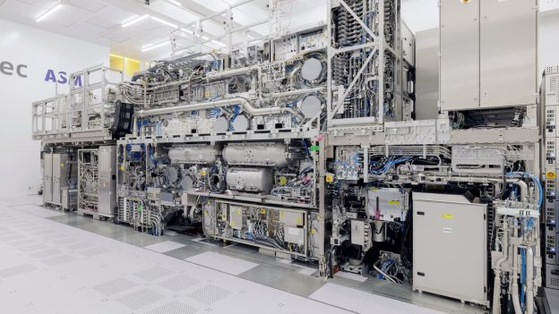
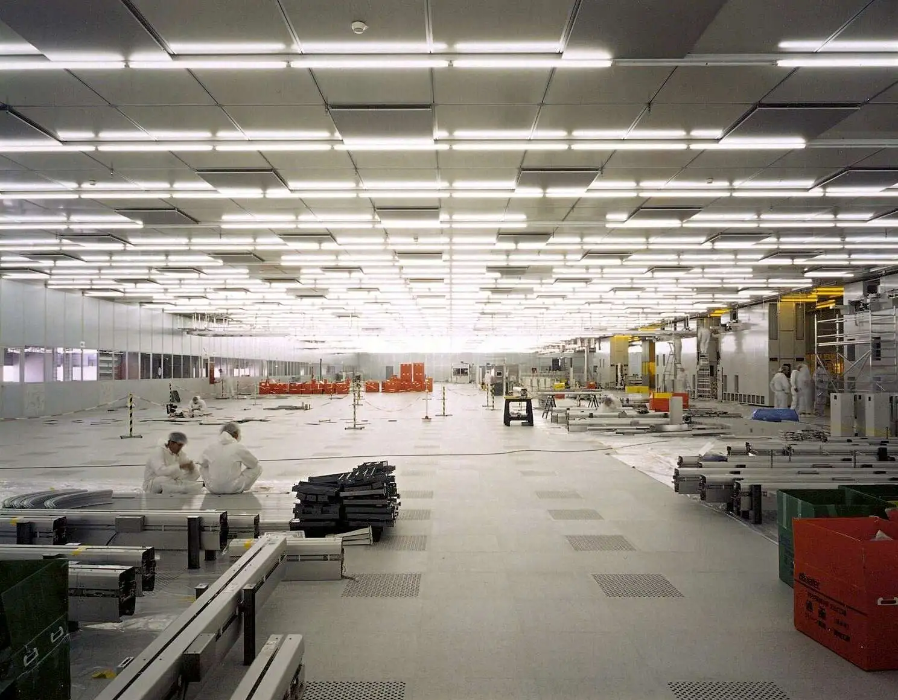
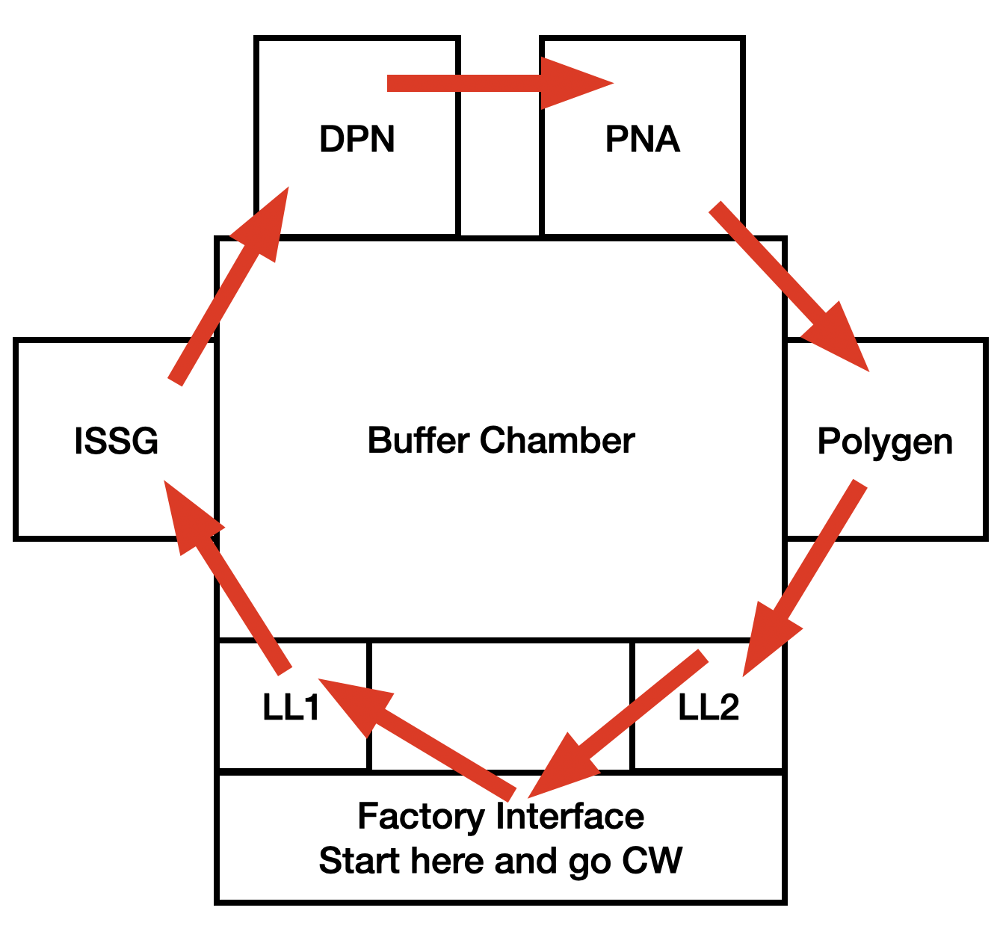
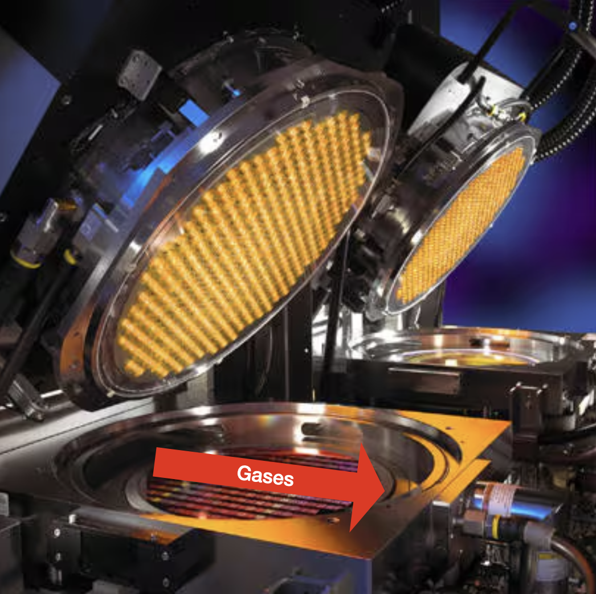
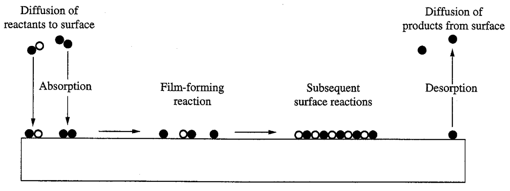
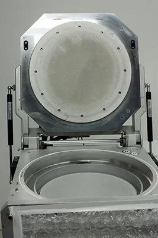

I tried to include as many links as possible. Some links are quoted but put directly in here because I think it helps to put everything in one space without having to go between tabs.
I also tried to keep info basic enough for the skimmers/laypeople to enjoy while still mentioning potentially more technical details for those interested. Pictures are sprinkled throughout to put an image with the words.
This information is current as of May 2025.
Context
Construction Physics' How to Build a $20 Billion Semiconductor Fab is an excellent introduction into both the semiconductor manufacturing process and the physical building that houses the manufacturing operations, but (understandably) chooses not to expand on a critical component: the equipment used to make the semiconductor chips. (To be clear, you should probably read that first before reading this.)
As Brian writes:
Early integrated circuits could be made with just ... dozens of process steps, but a modern leading-edge microchip might require ... thousands of separate process steps.
The equipment, also called tools or machines, is what performs these individual process steps. In the same way that a traditional machine shop has a mille, lathe, and bandsaw to perform a variety of operations on a single piece of metal to create a final product, a fab has deposition tools, etch tools, and lithography tools (among many, many others) to perform a variety of operations on a single silicon wafer to create the final chip.
So what does the equipment even look like? Some tools are quite boxy to help minimize the area used, or the footprint. Some tools are less boxy due to sheer requirements, i.e., the original equipment manufacturer (OEM) could only make it so small area-wise before it lost some functionality or performance.
Here's a picture of one of Applied Materials' (AMAT) tools, the Endura (note that while not perfectly box-like, it can still fit inside a basic rectangular area):
And here's a picture of a Tokyo Electron Limited (TEL) furnace that can fit inside a very narrow space, allowing strategic use of often underutilized overhead space while minimizing its 2D footprint:
The rest of this piece will go over everything around tools: how they're selected, a detailed overview of all the parts of an example tool, and what tools generally share in common regardless of the process. There are even some fun little games to help visualize concepts.
Tool Selection
There are a gazillion steps that happen before one actually uses a tool, especially if it's the first fab and there's nothing to match off of.
Process Design
First, the chips designers craft the individual steps needed to go from a bare silicon wafer to the final product. These steps include low-level specifics like what materials they'll use, temperature/pressure/gas flow needed, etc. This is done in technology CAD (TCAD) software like Synopsys to minimize on-wafer experimentation and hit the ground running. (Note that sometimes the designers here don't care about the manufacturability of the process—they will simply do what is best for the device performance and leave the equipment and process engineers to figure out the rest at the detriment of their weekends and hairlines and sanity, leading them to gripe on the internet to strangers in run-on sentences.)
TCAD is like AutoCAD but for super nerds
Jokes aside, there is some amount of direction from the head honchos on balancing out cost considerations with device performance depending on the size of the company's coffers, the (potential) demand of the product, and the raw expected value of the proposed flow. Does the flow really need that one step that requires a brand new one-of-a-kind (OAK) tool in the fab, or can they figure out another way to achieve the same results? Do they really need to use the oh-so-expensive, but incredibly reliable and proven, nitrous oxide (N2O) as a primary gas when growing gate oxides, or can they find a way to make an N2-O2 chemistry work, despite the literature saying it is worse in almost all ways? Do they really need all that helium to help cool the wafer faster, or can they make do with N2? The tradeoffs are infinite.
When in doubt, it's probably expensive for a reason
Considerations
Now that the general process flow has been created, the grunts (equipment and process engineers) can start selecting the tools that fit the requirements. Plus, if they ask really nicely and their parents (read: management) let them, they may even be able to add some sweet, sweet goodies on from the boring base model to make the tool even better.
Thankfully free markets and anti-monopoly laws allow some leeway in choosing which tool is best, where best can mean a bunch of different things (in no particular order):
Cost:
How cheap is the tool? Paying a bit more upfront may result in benefits down the road.
Is there a warranty that comes with it? OEMs generally offer a one-year warranty on the tool and any major issues that arise.
Any discounts they are willing to provide? Fabs that know they are going to keep buying tools may enter into a volume purchasing agreement with the vendor to get lower costs.
How expensive is it to maintain, both in terms of parts and manpower?
Footprint: What is the area of the tool? Most fabs aren't too worried about the height of the tool, but rather the x- and y-axis dimensions. A bigger footprint means fewer tools, fewer tools means fewer chips are produced, ultimately resulting in less money.
Throughput: How many wafers can it produce per hour (pph) without degrading in quality?
Support: Does the OEM plan to support the platform for the long-term future in terms of both parts and service?
Nicheness: Is the platform unique to the point that:
The OEM only has a handful of specialists working on it?
It is difficult to find experienced employees to work on it?
There is a low supply of parts due to lack of demand?
You should probably get a different tool if this is the only guy left at the OEM that knows it well
It may be better to find an equivalent platform that is much more common. I've heard of OEMs sunsetting support for certain tools because they want to force purchases of new equipment and there just isn't enough demand in the market to justify supporting it anymore. This can leave fabs in precarious situations, especially if the OEM isn't willing to release IP around the platform or provide contact details of former employees who could help, even if it won't hurt their bottom line.
Similarity: How similar is the tool to the rest of the fleet it will be added to? There is a delicate balance of wanting to ensure wafers are processed as identically as possible and getting newer revisions of the same platform to improve important fab metrics. Intel's Copy EXACTLY! method takes this to an extreme, but not uncalled for, level. (To show how important identicality is to some fabs, I've heard of companies being asked by OEMs if they'd sell back a now-obsolete part for a massive markup in order for the OEM to facilitate making a tool that matched another customer's already-existing fleet.)
Purchasing
Engineers work with OEMs to help design the tool to the customer's specifications. The customer may say I want X and don't want Y and the OEM may offer a catalog of attractive upgrades with data to support their efficacy. The engineer may also simply say "match this new guy to our current tool with serial number 123", which makes it much easier on everyone.
Once the design and final price are agreed upon, the customer purchases the tool.
How much do tools costs? At least $1MM (and no, that's not a Dr. Evil meme opportunity, I'm being serious), but it really depends on the tool configuration, which can and will cause it to go higher very quickly. The most expensive machine on the markert is ASML's high-NA EUV machine with an infamous price tag of $400MM.

Decades of research, no competitors, and excellent operation merits $400MM
Factories will do their own factory acceptance testing (FAT) prior to shipping to ensure everything was manufactured correctly with no to minimal defects.
Shipping occurs by either land (freight truck), air (cargo plane), or sea (cargo ship).
Installation
The OEM includes installation labor and relevant parts in the price of the tool. OEM employees, often dedicated to installing equipment and very little else (unsurprisingly called the install team), will come in and follow step-by-step guides created by the tool experts to ensure the installation is done correctly, completely, and quickly.
The fab's facility team will often have all the necessary facilities (power, gas, water) prepared for the tool when it arrives. They are able to do this because the OEM will have provided all of the necessary specifications in a document. For example:
Power: How much power is needed? What gauge of wires are needed? How many connections? Do they need to be sheathed? Are transformers required?
Gas: What gases are needed? What supply pressures are needed? What flow rates are needed?
Water: What flow rates are needed? What type of connection will need to be made at the tool?

An empty fab before the overhead transportation system is installed
Example Tool: Gate Stack
High level, you can think of a tool as a miniature kitchen. Some tools perform a singular process (like putting a piece of bread in a toaster) and others perform multiple processes (like baking, adding an ingredient, then baking again).
Factory interface: Connects the rest of the factory to tool by allowing a place to automatically load the wafers into and out of the tool
Loadlocks: Allows transfer of wafers between atmospheric and reduced pressure (vacuum) sides of tool. Keeping the "process" side of the tool under vacuum minimizes contamination risk.
Buffer chamber: Allows transfer of wafers between chambers while maintaining vacuum. This is like an atrium of a house, where there are four different rooms (the process chambers) that are accessible.
Process chambers (listed in order of processing):
Radiance: Grows the gate oxide using ISSG (in-situ steam generation)
DPN (decoupled plasma nitridation): Implants nitrogen into the gate oxide using a plasma
Radiance: Anneals the nitrogen into the gate oxide to minimize nitrogen loss (called PNA, or post-nitridation anneal)
Polygen (polysilicon generator): Deposits a polysilicon gate on top of the gate oxide
Supporting infrastructure:
Gas panels: Supplies gases to chamber
Power boxes: Supplies power to chamber
And just to be explicit, here's the complete path of a normal wafer through the tool with explanations of each step:
FOUP with wafer inside lands on a loadport. This is dropped off by the AMHS (automatic material handling system).
Loadport scans the FOUP to determine the correct number of wafers is present.
Wafer gets aligned based on its notch's position.
Wafer is placed into loadlock that is at atmospheric pressure by the factory interface robot.
Loadlock pumps down to the same pressure as the buffer chamber to minimize any pressure differential between the two chambers.
Buffer chamber robot (BR) picks up the wafer from the loadlock after the door separating the buffer chamber and loadlock opens.
BR picks up wafer from loadlock and places it into Radiance ISSG chamber for processing.
BR picks up wafer from ISSG chamber and places it into DPN chamber for processing.
BR picks up wafer from DPN chamber and places it into PNA chamber for processing.
BR picks up wafer from PNA chamber and places it in the loadlock for cooling.
BR picks up wafer from Polygen chamber and places it in the loadlock for transfer back to the FOUP.
FIR picks up wafer from loadlock and places it back into the FOUP.

Remember that the buffer robot has to pick up and drop off the wafer between chambers
Factory Interface
As the name implies, the factory interface (FI) connects the tool to the rest of the factory. Wafers in FOUPs get loaded in through the FI's loadports then transferred to the rest of the tool for processing. Centura FIs consist of the following parts:
Loadports
FOUPs are dropped off onto the loadport by the AMHS and their doors removed in order for their wafers to be scanned by the tool in one of two ways:
The loadport door, which has a sensor at the top of it, moves up and down across the height of the FOUP. Each time the sensor's light beam is broken adds +1 to the wafer counter.
The robot fork moves up and down across the height of the FOUP and counts the wafers using the same light beam methodology.
[image of front of FI labeled]
Most factories' automations provide the tool with the number of wafers they are sending, allowing verification of the count itself. The tool alarms if there's a mismatch so a technician can investigate. Did one wafer fall on top of the other, making it seem like there was one less? Is there someone already on a plane back to North Korea to reverse engineer the chip? Did the robot miscount for some odd reason?
Once the FOUP and its wafers are successfully scanned, the next step involves the...
Robot
The FI robot is responsible for moving wafers to and from places in the FI or loadlocks (e.g., from loadport1 to loadlock1). Here's a video showing an FI robot picking up and placing to from multiple positions:
Robots have end effectors (in the form of a fork) that the wafer sits on when being transported. A plunger actuates forward by pneumatic (air) pressure to secure the wafer against the end of the blade to prevent movement while moving. The robot knows a wafer is present based on the plunger's position when activated: if the plunger is too far forward then there's no wafer and if it's too far back there could be a wafer, but it won't know until it plunges.
There are multiple styles of FI robots (ordered by most to least modern):
Stationary: Robot is fixed in the middle of the FI, but multiple axes allow longer reach, eliminating the need for a track.
Axes: Height (Z), extension (Y), rotation (θ), and track (X) effectively exist, but are instead determined by wrist and link positions
Speed: Give-you-a-major-concussion-if-it-hits-your-head fast, and that's on the medium setting!
Track: Robot moves along a track that spans the width of the FI, allowing it to go directly in front of the locations it is picking or placing from. This eliminates the need for extra axes. The robot is capable of moving its track and Z axes at the same time to speed up processing.
Dual: Two robots at either end of the FI team up to move wafers by utilizing passthroughs, or small shelves they can set the wafer on to give to the other robot. It's like playing Overcooked with your partner, but instead of yelling at each other for messing up the robots just make mechanical noises and never any mistakes. For example, if loadport1 is running wafers, then robot1 will want to make sure robot2 is feeling the love, so she'll put waferX onto passthrough1 so robot2 can contribute to the cause.
Fabs like clean air. They also like laminar (straight from top to bottom) air flow. Which means they also really like mini environments (ME) that are the FIs themselves.
The FI is a ME in and of itself. It's shielded from the main fab environment by doors and walls to prevent any contamination—be it particles, undesirable gases, etc—from entering. All entry points have seals that are enough to protect the ME's integrity so when wafers are being transferred around inside they aren't being (read: shouldn't be) subjected to potential harm of particles or unclean air.
A filter fan unit (FFU) installed on the top of the FI ensures that air flow is laminar and any particles are getting trapped inside the filter instead of on the wafer.
Mainframe
The mainframe consists of the loadlocks (LL) and buffer chamber.
Radiance
US 8,254,767 B2 Method and apparatus for extended temperature pyrometry offers a detailed overview of the Radiance chamber and its operation, just in patentese. So instead I'm here to explain it in layman's terms and with a video primer of the 200 mm version, which isn't all that different from the 300 mm version:
And here's the 300 mm version of the famous honeycomb structure:
Yes, it's as heavy as it looks, and yes, you don't want to drop it on your foot
Each of those holes—all 400+ of them—house an individual lamp that shines light to heat the wafer. Notice that holes are perfectly concentrically symmetrical across the entire structure, allowing for concentric rings of lamp zones that can be individually controlled by a high-speed computer to maximize wafer temperature uniformity in real-time.
So let's say the lamps are on and the wafer is heating up, causing it to emit light from the backside. A handy instrument called a pyrometer is then used to measure the temperature of the wafer based on the light it's emitting. (I won't go into the science-y details about radiation, blackbodies, and how the pyrometer translate light into a temperature reading. US 6,406,179 Sensor for measuring a substrate temperature is AMAT's patent on their pyrometer.)
Light enters the sapphire tip (bottom of picture) and gets transformed into a temperatures signal
From here the chamber can use a high-speed controller—also called a temperature controller—to adjust the lamp's output accordingly: more voltage = brighter = hotter, or less voltage = dimmer = colder. 100s of adjustments are made per second to ensure either a) stable ramp rates (when the temperature is increasing to get to the final temperature), or b) stable temperatures during the "soak" step, aptly named because the wafer is soaking in all the heat and gases and steam, like a semiconductor sauna.
I know it's slop but at least it's relevant
A magnetically-levitated (maglev) rotor spins at 200+ rpm to ensure temperature uniformity across the wafer. A rotatable stator is outside of the main chamber body and spins using a motor; with the rotor magnetically coupled to the stator, it can spin quite fast! The wafer rests on a few pieces that are generically called the process kit (see U.S. [FINISH]) and spins with the rotor. Why does rotation help here? Let's say there's a particular hot or cold spot in the chamber somewhere for whatever reason. It would be detrimental if one part of the wafer experienced said spot for the entire process, so we choose to minimize the time spent seeing that by spreading the love throughout the rest of the wafer by spinning it.
[FINISH]
Gases vary by the film, but often include N2O, H2, O2, N2, or some combination thereof. They are fed in through the gas panel and get all nice and mixed together before entering one side of the chamber in a spray-like pattern that's pretty darn close to the width of the wafer. The gases are then "sucked" across the surface of the wafer by the vacuum pump port opposite the gas injection port. It's this combination—a pristine, freshly-cleaned wafer surface, the right ratio of 99.9999%-pure gases, an insane heat that rivals that of hell itself, the low pressure—that generates steam which in turn grows an oxide on the wafer surface. And you'd think that it wouldn't be that uniform right? That we couldn't get nanometer precision with such a barbaric process of heat plus gas plus vacuum? Well you'd be wrong. These bad boys are able to hit a range (maximum oxide thickness minus minimum oxide thickness) of only a few nanometres wafer-over-wafer, year-over-year with minimal maintenance. Talk about repeatability!

Gases go weeeeeeeeee across the chamber
The pressure is controlled by two main components: a vacuum pump and a throttle valve (TV). The pump is on all the time, blinding pumping away at whatever is thrown in its path. The TV adjusts its angle based on the pressure setpoint alone and a simple PID controller built in to the chamber controller. A 100%-open TV means the pressure setpoint is way lower than the actual pressure so it needs to pump quickly, while a 0%-open TV means the setpoint is way higher than actual so it needs to fill up with gas, or vent, quickly.
And that's about it for the Radiance chamber. Onto the...
In the DPN [decoupled plasma nitridation] HD [high dose] nitridation process, silicon oxide dielectric is infused with nitrogen using low-energy, pulsed plasma to create the desired high nitrogen concentration at the oxynitride/poly interface and low concentration at the silicon/oxynitride interface of the gate stack for preserving high channel mobility. New chemistry and direct, high-temperature wafer heating generate the higher dosages of nitrogen needed for oxynitride gates at the 3X and 2Xnm nodes while simultaneously achieving superior leakage and threshold voltage performance. Conventional nitridation processes are limited in achieving the requisite leakage and threshold voltage.
Nitrogen concentration in the oxynitride decreases over time following the nitridation treatment. Because the Centura DPN HD system integrates DPN and PNA chambers in a single vacuum environment, the system can counteract this nitrogen loss by performing a high-temperature anneal immediately following the nitridation process. In addition, integrating the DPN and PNA chambers on a common platform removes time-dependent process variability, producing the more stable and robust process essential for manufacturing oxynitride gates. The PNA also eliminates an unstable bonding phase from the nitridation process that can cause variation in threshold voltage. By reducing or removing this unstable phase, the PNA contributes to improved device performance.
A less technical description: the DPN chamber adds nitrogen to the ISSG oxide to increase its dielectric constant, an important factor that improves device performance for various reasons.
Little known fact: N2 plasmas rejuvenate the skin
Now, onto the actual operation, which is pretty simple:
Wafer is placed onto the chamber pedestal
A N2-rich plasma is struck
The wafer surface, which is now covered in an oxide, soaks in the plasma, absorbing N2
Finis!
The chamber is equipped with two types of pumps: a turbomolecular pump located next to the chamber itself and a dry backing pump that a) supports the turbo's operation, and b) can pump
Turbomolecular: Also called a turbo, this pump bring the chamber down to very low pressures after it reaches low pressure.
Backing: Also called a dry pump, this pump helps keep the turbo at safe operating pressures and is able to bring the chamber down to pressures that the turbo can operate at.
An RF (power) generator applies power to RF coils located above and outside the chamber, striking and maintaining a plasma inside the chamber. The RF power drives the N2 [FINISH IS THIS RIGHT?? OR IS IT N2+]
Polygen
The Polygen is a type of CVD (chemical vapor deposition) process. [FINISH]

Remember, those aren't marbles, they're atoms (source)
There are two main parts to the Polygen chamber:
A heater that maintains the wafer temperature in a regime that polysilicon can easily grow
A showerhead with 1000s of tiny holes that evenly distributes process gases from the top of the chamber towards the wafer
[UPDATE PIC WITH ARROWS]

If only you could put pizza on the heater and flow in sauce and cheese through the showerhead
That's pretty much it. Most polysilicon processes simply use silane, SiH4,
(This section describes a generic gas panel (GP). GP design varies by tool and manufacturer.)
Gas panels, made up of multiple individual gas lines, connect the gas supply to the chamber by way of multiple in-line components. The line's components, in order from supply to chamber, generally are:
Manual isolation valve: This valve is operated by humans to isolate the gas panel from the gas supply for safety when working on the tool. It rotates 90 degrees and is able to be locked out by a safety lock to ensure it doesn't get opened unintentionally. Nobody wants a bunch of flammable H2 floating around while they're working!
Three-way valve: This valve has two inputs and one output. One input is N2 (or any inert gas, but it's almost always N2 because of how cheap it is). N2 acts as a "purge" gas to remove any residual process gas that's left in the gas line. The other input is the (often toxic) process gas, such as SiH4 or PH3. The valves are opened and closed using air (pneumatics) and configured such that at most one gas can be flowing at a time.
Regulator: The regulator controls the pressure that the remaining components closer to the chamber see. For example, the supply pressure may be 100 psi, but we want 30 psi at the tool, so the regulator is used to reduce the pressure to the desired level.
Transducer: Shows the pressure just past the regulator on a digital display for the operator to adjust.
Filter: The filter prevents any particles (above a certain size) in the gas line from making it to the chamber.
Mass flow controller (MFC): The MFC controls how much gas flows through the line. The tool gives it a flow setpoint and a PID controller inside the MFC maintains the proper flow.
MFC isolation valves: Two pneumatic valves on either side of the MFC are open when the MFC is flowing and closed when the MFC is stopped. These are secondary measures to ensure gas isn't flowing in case something is leaking.
Example; now imagine 15 of these side-by-side and having to replace a single component (source)
Each stick then connects to a gas manifold, or section of pipe that combines all the gases from their individual lines into one common line that feeds directly into the chamber. Depending on the gases and reactivities, there may be sub manifolds. For example, ISSG gas panels may be split up into two manifolds, flammables (gases containing hydrogen) and oxidizers (gases containing oxygen), that meet and mix shortly before they reach the chamber.
Valves are either normally-open (NO) or normally-closed (NC); they are also either fully-open or fully-closed, with no in between. NO valves go full open when they are de-energized and allow gas to flow through. NC valves go full closed when they are de-energized and stop the flow of gas. Can you guess which one you want for the purge gases and which you want for the process gases? If you chose NO and NC, congrats, you're right and have a shot at being a fab engineer. If you chose NO for the second one, congrats, you'll either destroy the fab or get fired–if it's the first, then the second will definitely happen. Almost all process gases' MFCs are configured to be NC and it would take some convincing of the vendor to get them NO.
Here's a full gas panel—only slightly more complicated than a single stick! (source)
Glew Engineering has an excellent series of posts on semiconductor gas panels:
Connections also vary by gas panel with there being three main types:
VCR: Swagelok, the manufacturer, can explain better than me:
Swagelok VCR® metal gasket face seal fittings are the original vacuum coupling radius (VCR) fittings and have set the industry standard for metal-to-metal sealed connections. Swagelok VCR® fittings can feature an ultra-high purity construction and can be used in high-purity applications ranging from vacuum to positive pressure. Face seal fittings have less area of entrapment and are cleaner than tube fittings, limiting the potential for contamination in applications where low particulate levels are imperative. Metal-to-metal sealing allows for VCR® fitting use in applications where elastomers are incompatible with system fluid.
Safety is paramount in fabs. Even if they're not featured in Things I Won't Work With, some of the nastiest shit known to man is cooped up within fab walls, from arsine to phosphine to bromine to hydrofluoric acid. The list goes on. Basically stay the heck away from your local neighborhood fab if you know what's good for you.
Thankfully the OEMs care about safety and design their tools accordingly. Two types of safety features will be discussed: interlocks and ergonomics.
Interlocks
Interlocks prevent unsafe operations from happening within one part of the tool. All interlocks must be satisfied in order for the tool to operate with fully capabilities. Interlocks are often configured at the hardware level to ensure something physical is activated or deactivated instead of relying on software—which could have undiscovered bugs or reliance on something else—to do it. The hardware is also designed such that, where possible, the interlock is automatically satisfied or dissatisfied based on physical conditions, like a button being pressed because of weight or water flowiing through hoses.
Here are some potential interlocks for a generic chamber (along with how they are designed and detected by the system in parentheses):
Lid is closed
Button is depressed if and only if chamber lid is closed
Gas panel door is closed
Button is depressed if and only if chamber lid is closed
Cooling water is flowing
Water flow meter detects if water is flowing and sends electrical signal back to tool.
Power is on
Pressure is below X
Pressure manometer
Certain interlocks can be overriden if specific maintenance needs to be done.